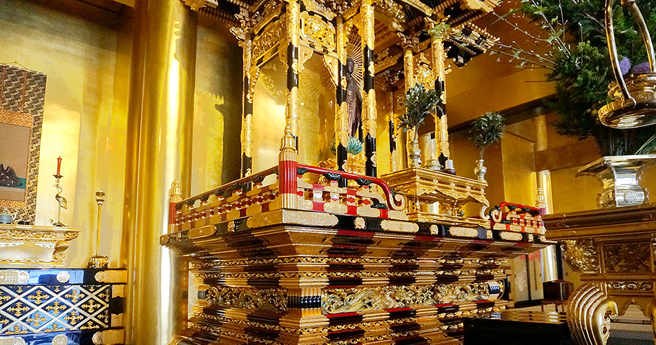

納骨
難波別院の納骨は、亡き人を偲びつつ、今を生きる私たち一人ひとりの命のあり方を見つめ直す奇縁となることを願いに、親鸞聖人の本願念仏の教えに帰依する門信徒の同朋生活の身をあげることを目的としています。ご家族のお骨を納めたい方など是非ご相談ください。詳しくは以下の項目をご覧ください。

読経時間
午前 9:00 9:45 10:30 11:15
午後 1:00 1:45 2:30
※納骨はご予約制となっております。事前にご連絡ください
※受付には多少お時間がかかります。遅くとも20分前にはご来院ください。
胴骨
約20cm
冥加金
12万円以上（内7万円は保証金）
3年間の期限を設けて個別でお預かりいたします。3年以内にお引き取りされる場合は、保証金をお返しいたします。引き取りがない場合は、保証金を使用して京都の大谷祖廟にお持ちいたします。
頂骨
約15cm
冥加金
5万円以上
頂骨はご遺族のお申し出があるまで個別でお預かりいたします。
当日の流れ
本堂向かって左側の受付までお越しください。必要書類及び冥加金をお預かりさせていただきます。
本堂でお勤めの後、本堂裏手の納骨室へお納めいたします。
受付からお納めまで約1時間を予定しております。必要書類等はお電話にてご確認をお願いいたします。